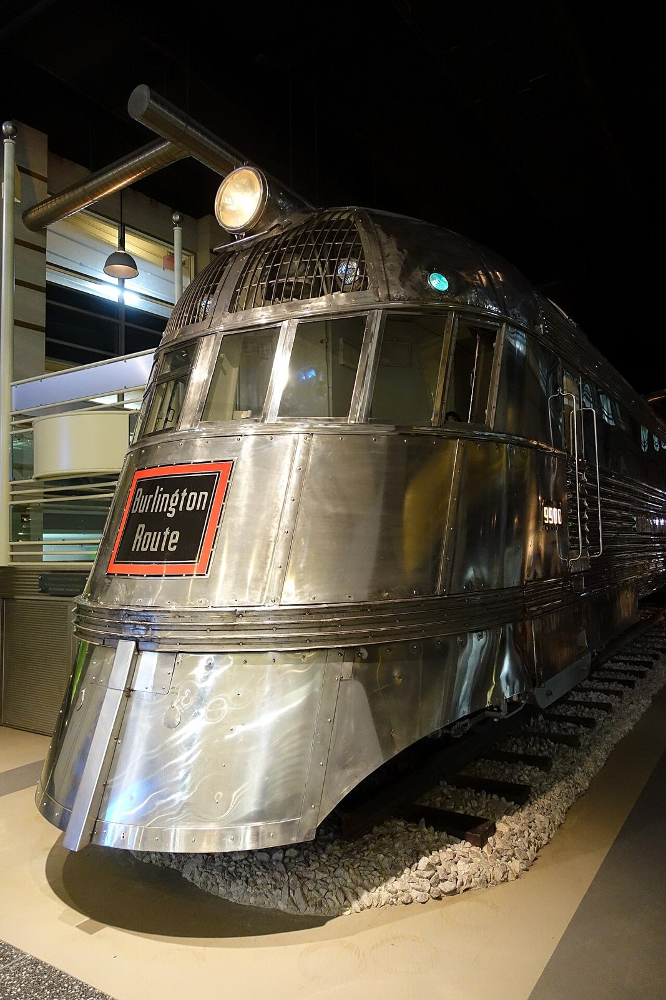

References / Product / 299
Pioneer Zephyr, 1934
The Burlington’s stainless-steel diesel train of 1934: a sloping, rounded nose and sides fluted with horizontal lines.
- Source
- Wikipedia: Pioneer Zephyr
- Creator
- Budd Company; exterior design by Albert Gardner Dean with Paul Philippe Cret and John Harbeson (Wikipedia)
- Made
- 1934 (completed 9 April 1934)
- Style
- Streamline Moderne (agent-proposed, not yet reviewed by a person)
- Moods
- Streamlined, machine-age, optimistic
- Evidence
- Downloaded and inspected Daderot’s 2014 photograph of the train at the Museum of Science and Industry, Chicago, on Wikimedia Commons_-_DSC06911.JPG), at 1280 × 1920 px.
- Reviewed
- Rights
- Open license, stored. License: CC0-1.0. Rights policy
Context
Built by the Budd Company in 1934 of stainless steel joined by shotwelding; exterior design by Albert Gardner Dean with the architects Paul Philippe Cret and John Harbeson. On 26 May 1934 it ran non-stop from Denver to Chicago, 1,015 miles in 13 hours 5 minutes, and appeared at the Century of Progress fair. It entered service on 11 November 1934. Wikipedia.
The train was donated to the Museum of Science and Industry, Chicago, in 1960. Wikipedia.
Observed
- The nose slopes back and rounds over into a dome covered by a grille of curved ribs, with a large round headlamp on top.
- The cab windows form a curved band across the front.
- Several thin parallel ridges run horizontally around the nose and continue along the sides as fluting.
- The skirt below curves forward to a blunt, rounded lower edge.
- The whole surface is polished stainless steel with visible rivet lines; the only color is a black and red “Burlington Route” sign on the nose.
Why it belongs
The fluting turns the speed line into structure: the parallel ridges that stiffen the steel also give the train its look. Many later graphics draw the same few parallel lines to mean stainless steel and speed.
Borrow
Use a band of four to six thin parallel lines that wraps a rounded corner and continues along the edge.
Set one small saturated badge on a large field of silver-gray.
Measured
Machine-extracted by tools/image-traits.py on . Full measurement.
- Mean chroma
- 0.08
- Palette
- #010101 26%
- #342e20 14%
- #1c1811 12%
- #ecd8b3 4%
- #594f39 4%
- #7b705b 4%
- #8b816d 4%
- #d4bf99 4%

